|
|
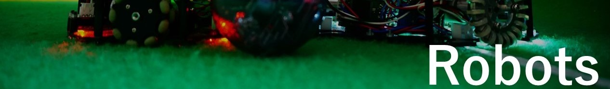
ロボット制作 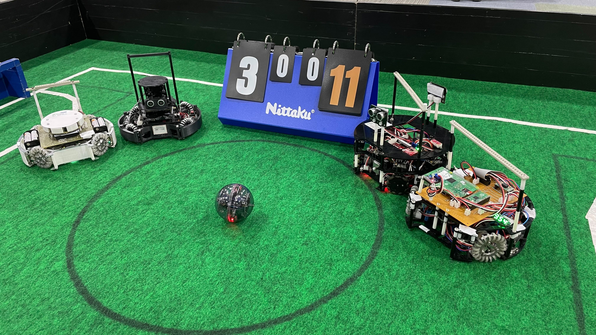
小学校の頃から電子工作に興味を持ちロボカップジュニアという自立型のロボットが様々な
競技を行う大会に出場しています。中学校の頃は関西ブロック、高校の頃は京滋奈ブロックからサッカーライトウエイト
に参加していました。 |
|
|
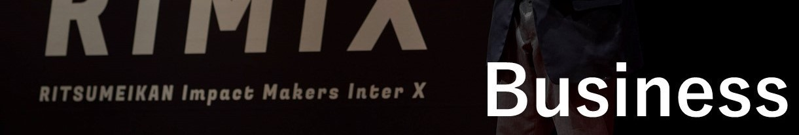
事業関連 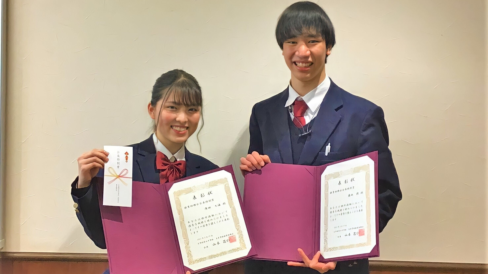
高校1年生の時にキャリア甲子園に参加したのをきっかけに
高校生4人でGENIEを結成し様々なビジネスコンテストに参加してきました。 |
|
|
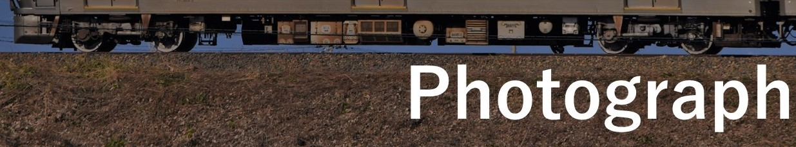
フォトグラフ 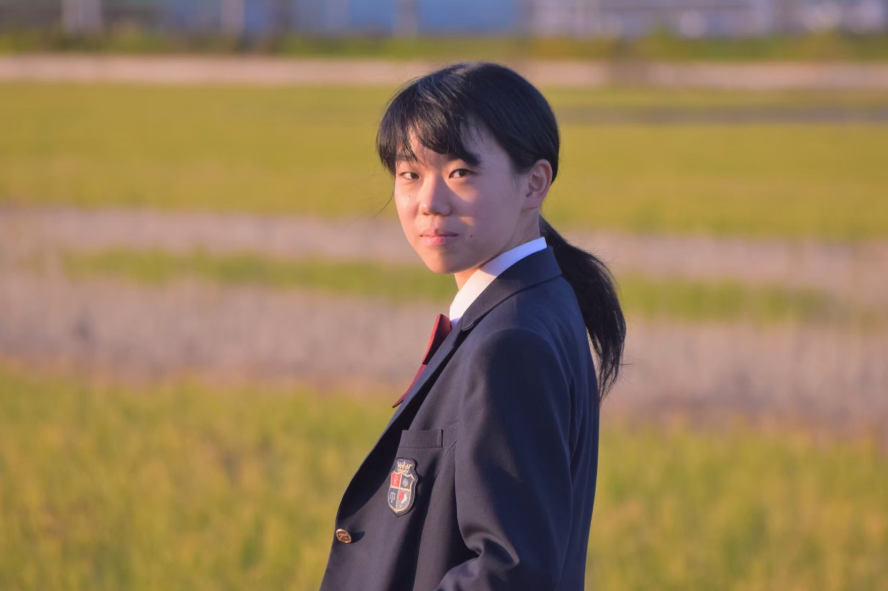 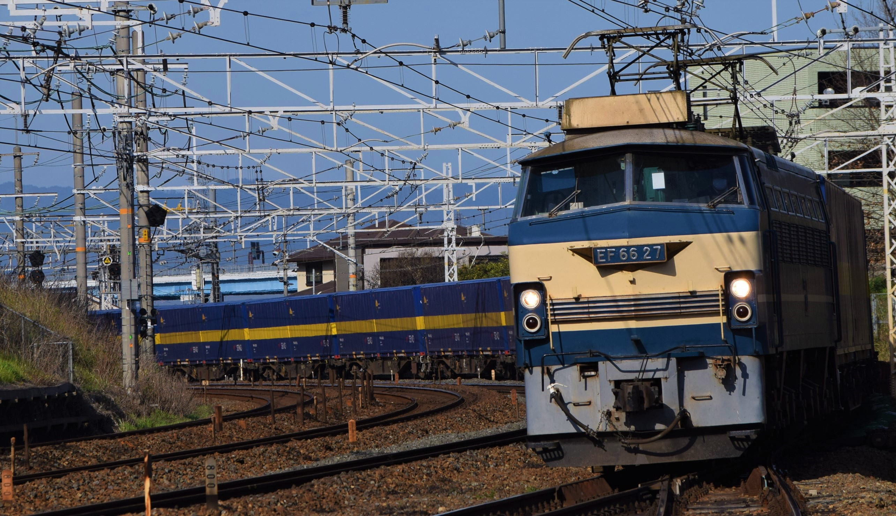 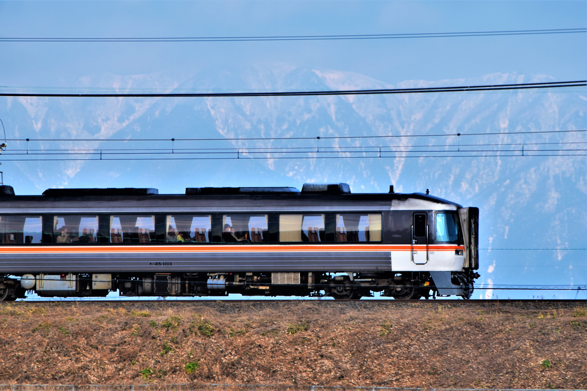 趣味程度ですが中学生の頃に買ってもらったD3300で主に鉄道写真を、時々依頼されて人物写真を撮ってます。 月に数回はカメラを片手に被写体を求めて走りまわっています。 |
|
|
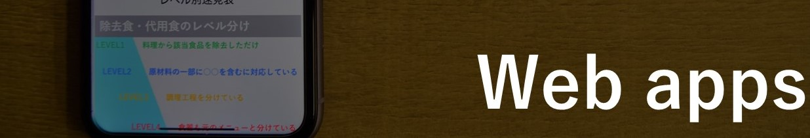
Web app 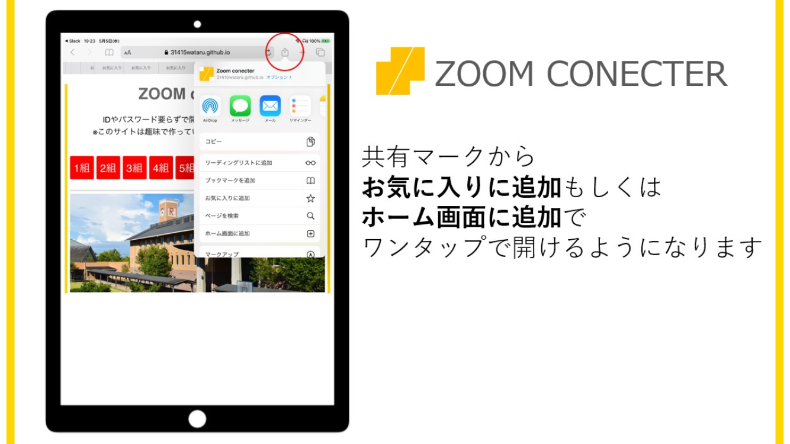
主に事業関連でWEB関連が必要になったときにHTMLやCSS、javascriptを用いて、
webサイトやwebサービスを制作し、ビジネスアイデアの実施に貢献しています。 |
|
|
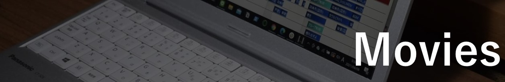
動画制作関連
|